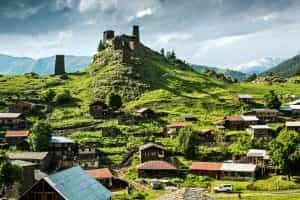
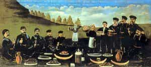

< < < Back
4 Reasons You Should Make A Trip To The Country Of Georgia – Return Of Kings
Georgia and The Caucasus are still quite an unknown travel destination, but are slowly beginning to gain more recognition as more and more tourists make their way to this up and coming destination. Untouched nature, wine and cuisine that rivals the likes of Italian, Spanish, and French cuisine, along with a large population of young women who still have their femininity intact are only a few of the reasons Georgia tops the charts. Below are the top reasons why you should include Georgia in your next travel itinerary:
1. Costs Of Living Remains Low
After the collapse of the Soviet Union, Georgia’s GDP fell sharply, as with the rest of the FSU countries. Recovery started in the early 2000’s, and GDP has continue to grow each year since economic reforms have been brought in to place. Prices for goods inside of Georgia’s capital, Tbilisi, remain low for foreigners, and monthly rentals with great logistics can be had for only a few hundred dollars per month.
Local markets offer fresh produce at extremely low prices, and fresh local baked goods such as chachapuri (fresh bread with cheese baked inside) can be had a euro or less. There are a few large supermarkets that will contain many products imported from Germany and Europe, and of course since Russia is its largest trade partner, you won’t have any issue finding imported goods from The Motherland.
Once you get outside of the capital, prices are even cheaper, and taxis can be rented to drive long distances for as cheap as $40 to $50 a day (roughly 460km – 300mi miles), depending on your bargaining skills. Public transportation is even cheaper, and you can the true local experience by jumping in a marshutka (public van) and drive long distances for as cheap as a few dollars per ride.
Overall, you don’t even need to really watch your wallet too much while in Georgia. It’s pretty easy to keep spending low, while seeing the country and taking everything in it has to offer.

2. A Variety Of Vast And Untouched Nature
Georgian nature is some of the most raw and pristine that you will find left on earth. In the West you’ll have access to the Black Sea by visiting Batumi and other close cities. This is a great summer spot, where Georgian, Russians and other tourists flock to bask in the warm summer sun, swim in the warm sea, and take part in local festivals and music events that take place.
In the North and the East, you’ll find very mountainous regions to hike and explore, with cathedrals spread throughout dating back to as early as the 6th century. Visiting the Georgian Military highway along with hiking or driving to the top of Kazbegi, combined with a tour of the Tusheti region compares to no other trip you can take. Tbilisi itself boasts unique architecture that you will not find in any other place in the world, combined with excellent and easy to reach mountaintop views via the cities funicular (going back to price—less than $1 roundtrip!).
In the South, you have access to both Armenia and Azerbaijan where your exploration of The Caucasus can continue.

3. Traditional Women And Family Values Are Alive And Well
Over 80 percent of the Georgian population practices Eastern Orthodox Christianity. The women of Georgia are very traditional in their thinking, in that they want to raise a family, cook, clean and take care of their man—the same thinking that you will find throughout all of the FSU countries. It’s not uncommon for women in their mid to late twenties to still live at home with their family, only to move out once they get married.
Overall, the women are much more casually dressed when compared to other countries located in the Caucasus, especially in comparison with Armenia. Public affection in the form of kissing and hand holding doesn’t seem to be all that big, and you’ll normally find local parks loaded up with young couples hiding under the private coverage of foliage, being more intimate with one another.
Ratios in the nightclubs are generally not great, and those are not the type of women you’ll most likely be after in most cases anyway. Day game is the way to go, especially in Tbilisi, and most women have probably never been approached before in their lives. Younger generations are quite educated, interested in Western culture somewhat and can speak some English, while still maintaining their traditional values. The women of Georgia are most definitely more geared towards LTRs, making Georgia a great location to find quality women who have the highly sought after traditional mindset.
4. Food And Wine That Rivals Western Countries
Georgia is the oldest wine making country in the world, and its production dates back as far as 8,000 years. Georgians take a deep pride in their wine production, and a tasting of the many varieties of grapes that each region offers is a must. Tbilisi offers a selection of wine bars, offering wines from all over the country including hard to get bottles from smaller wineries. The best way to experience Georgian wine is to either get invited to a Georgian’s home and experience homemade wine along with a supra (literally meaning feast), or stop along your way while driving throughout the country to visit one of the many small roadside huts offering tastings and the option to purchase wine to go.

To go with the wine, Georgians have an extensive cuisines that focuses around baked goods as well as meat dishes paired with different herbs and spices. Being located at the crossroads of the ancient trade routes between the East and the West, Georgian cuisine takes a large influence from both spheres of the world. Walnuts, pomegranates, kidney beans, and cilantro are all staples that are blended in to the local dishes. Khachapuri Adjaruli (baked dough with a large stick of butter and an egg on top), Khinkhali (dumplings with meat, mushrooms, cheese, among other varieties), and Kharcho (a stew, with beef falling off the bone, combined with cilantro) are just a few of the many choices you’ll have.
The food is hearty, original, and will leave you coming back for more. Really, there’s not much of a reason to even cook at home while in Georgia, with the selection of great food at hand and the relatively cheap prices to boot.

Conclusion
Georgia is a combination of many unique factors that are hard to find in today’s world. The strong culture, nature and feminine women are a strong selling point for visiting this former Soviet republic, and are certainly the reasons that keep me coming back for more.
Read More: 5 Things I Learned After My First Trip To Japan